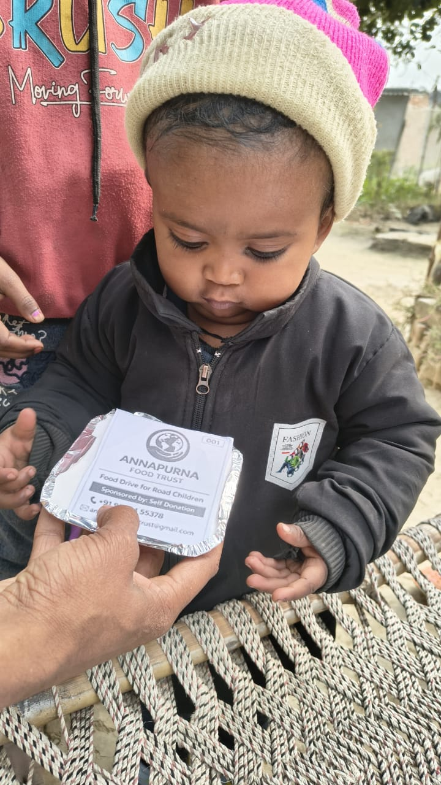
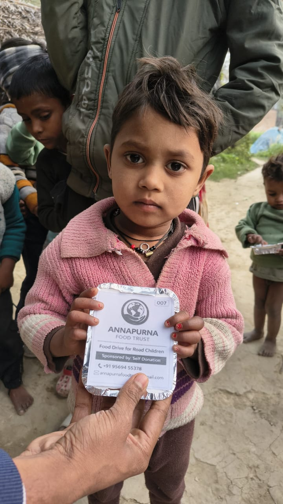
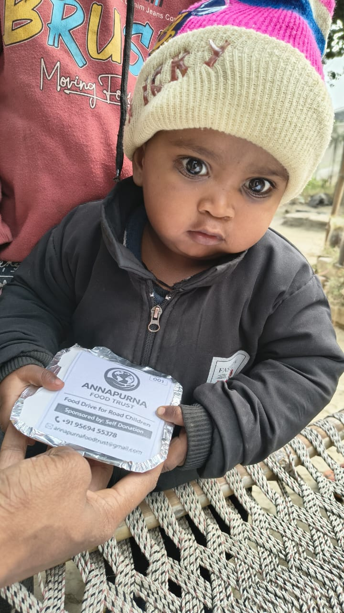
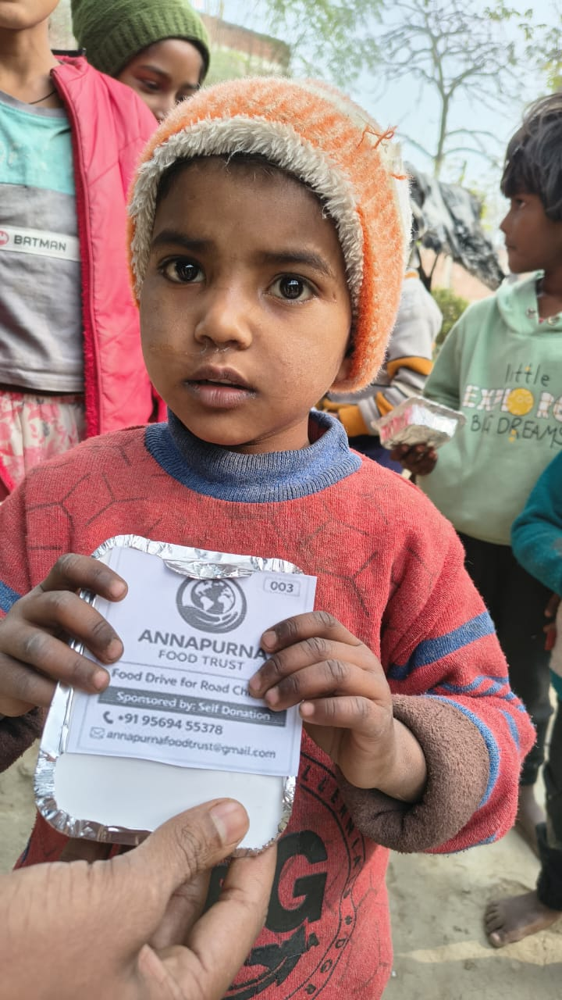
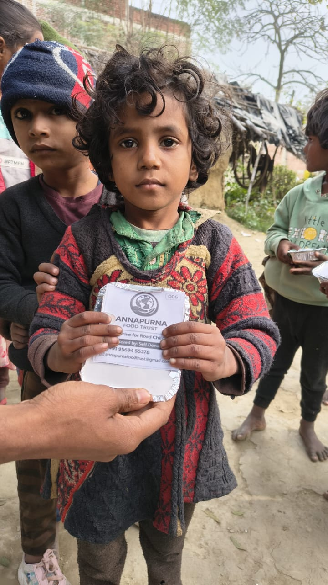
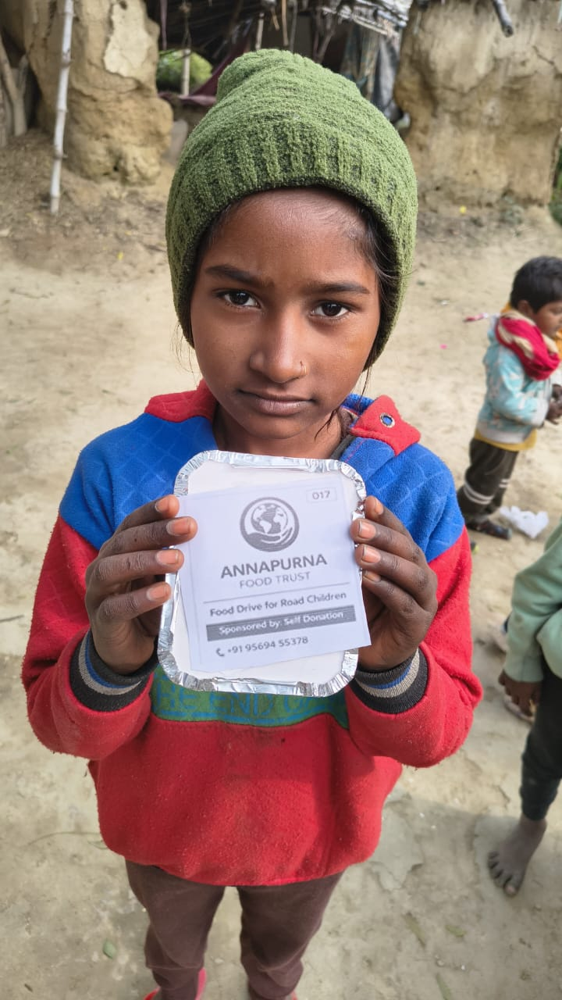
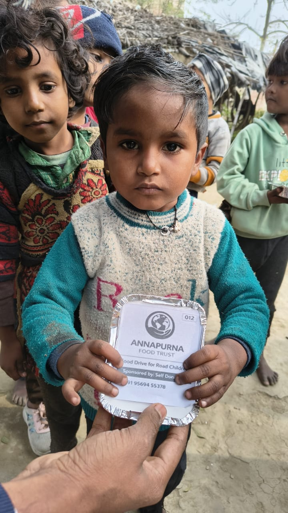
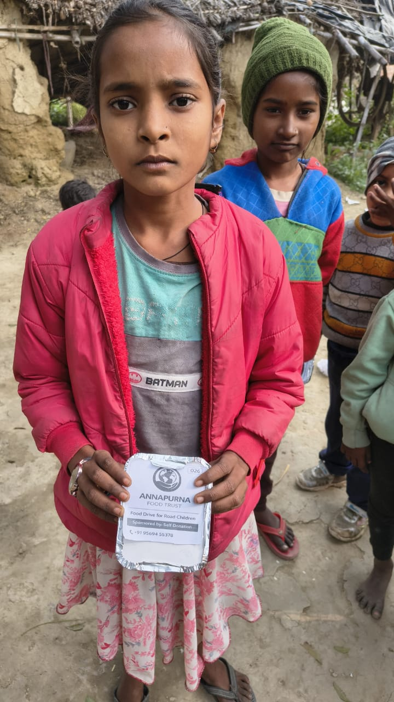
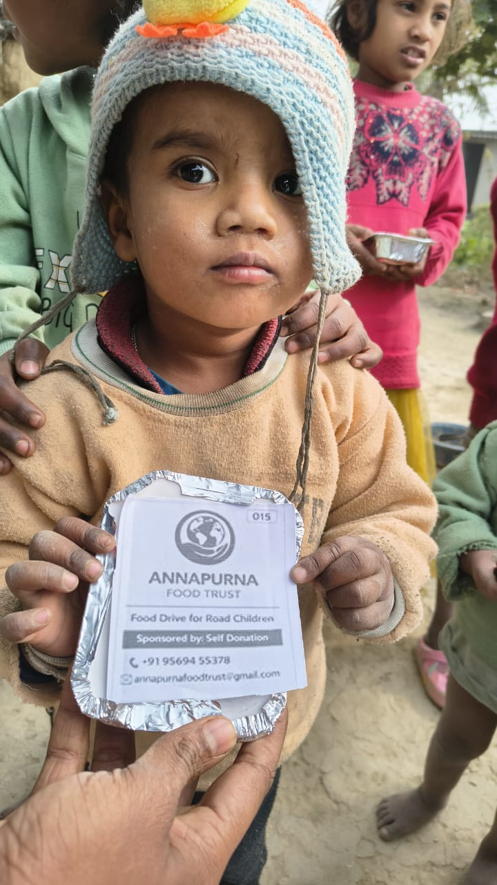

Fighting Hunger, Feeding Hope
Annapurna Food Trust is dedicated to fighting hunger and malnutrition in our community. We believe that access to nutritious food is a fundamental right, not a privilege.
Through our various initiatives, we work tirelessly to provide meals to those in need, reduce food waste, and create sustainable solutions for food security.
Milestones that define our impact
Started with a vision to end hunger
2024Crossed major milestone
Month 6Expanded to multiple areas
Year 1Awarded for social impact
CurrentProviding nutritious meals to underprivileged families and individuals
Building stronger communities through sustainable food programs
Promoting eco-friendly practices and reducing food waste
These beautiful children are the reason we do what we do. Every photo represents a life we've touched.









Your support has helped these children and many more. Together, we can reach even more families in need.
Continue SupportingYour contribution can make a real difference in someone's life
Scan the QR code to donate via UPI
All payments are securely processed
Scan to Donate